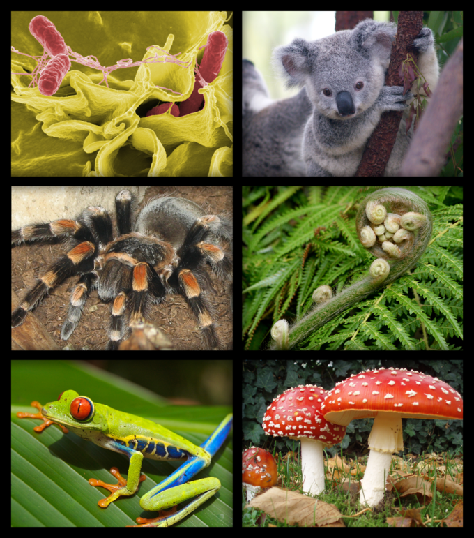
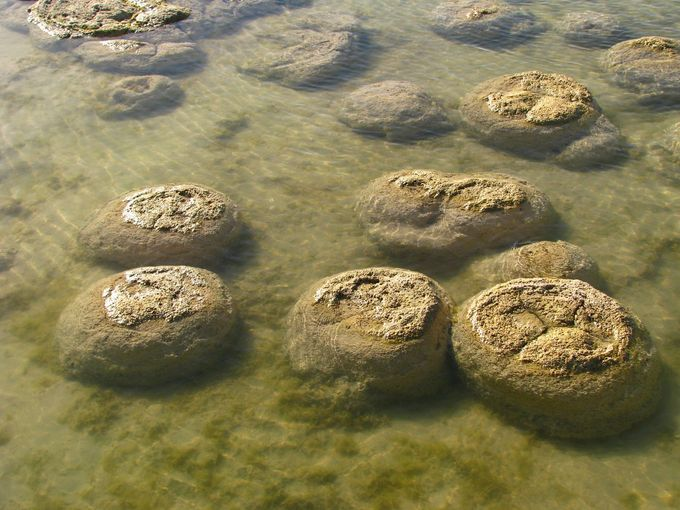

Biology is a natural science concerned with the study of life and living organisms.
Modern biology is a vast and eclectic field composed of many specialized
disciplines
that study the structure, function, growth, distribution, evolution, or other features
of living organisms. However, despite the broad scope of
biology, there are certain general
and unifying concepts that govern all study and research:
*the cell is the basic unit of life
*genes (consisting of DNA or RNA) are the basic unit of heredity
*evolution accounts for the unity and diversity seen among living organisms
*all organisms survive by consuming and transforming energy
*all organisms maintain a stable internal environment

Figure 1.1.1
: Biology: The Study of Life: A collection of organisms clockwise from top left: bacteria, koala, fern, toadstool, tree frog, tarantula.
Biological research indicates the first forms of life on Earth were microorganisms that existed for billions of years before the evolution of
larger organisms. The mammals, birds, and flowers so familiar to us are all relatively recent, originating within the last 200 million years.
Modern-appearing humans, Homo sapiens, are a relatively new species, having inhabited this planet for only the last 200,000 years (approximately).

Figure 1.1.1
: Stromatolites: Stromatolites, sedimentary accretions formed by the actions of
cyanobacteria, provide fossil evidence of life on Earth about 3.5 billion years ago.
History of Biological Science
Although modern biology is a relatively recent development, sciences related to and included
within it have been studied since ancient times. Natural philosophy was studied as early as the
ancient civilizations of Mesopotamia, Egypt, the Indian subcontinent, and China. However, the origins
of modern biology and its approach to the study of nature are most often traced back to ancient Greece.
(Biology is derived from the Greek word “bio” meaning “life” and the suffix “ology” meaning “study of.”)
Advances in microscopy also had a profound impact on biological thinking. In the early 19th century, a number
of biologists pointed to the central importance of the cell and in 1838, Schleiden and Schwann began promoting
the now universal ideas of the cell theory. Jean-Baptiste Lamarck was the first to present a coherent theory
of evolution, although it was the British naturalist Charles Darwin who spread the theory of natural
selection throughout the scientific community. In 1953, the discovery of the double helical structure of
DNA marked the transition to the era of molecular genetics.
//link of bilogy
https://bio.libretexts.org/Bookshelves/Introductory_and_General_Biology/Book%3A_General_Biology_(Boundless)/01%3A_The_Study_of_Life/1.01%3A_The_Science_of_Biology_-__Introduction_to_the_Study_of_Biology?readerView